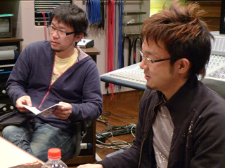
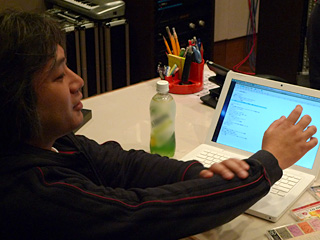
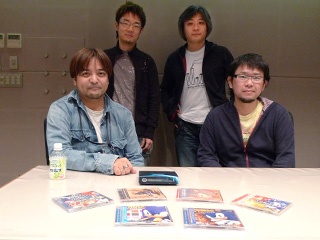
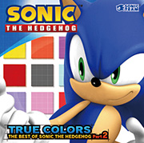

瀬上：今の大谷の発言に、『ソニック ワールドアドベンチャー』のときのキーワードとして「人には表現出来ないくらいの圧倒的なスピード感」ってのがあったけど、『ソニックと秘密のリング』のときのコンセプトって？

床井：いやー、「爆発的な」スピード感ですよ。あとは、胸の炎が示すタイムリミットとか、炎＝熱い魂みたいな。で、音楽性的にはパンクですね。
瀬上：え、あれ、パンクなのか？
床井：打ち破る何かというか、そんな感じで。
大谷：古めのパンクという感じですかね。
瀬上：『ソニック・ザ・ヘッジホッグ』の"His World"は、何と言っても、あの冒頭のフレーズが印象的過ぎたな。
大谷：あのときは、「大作感が欲しい、スピード感も欲しい」とリクエストがあって。大きな感じが欲しい、というとどうしてもドッシリしちゃうじゃないですか。
瀬上：でもスピード感ってもっと細かい感じだよね、キザミとかさ、大きな流れとは相反するような。
大谷：で、結局、出だしは大作感を現して、曲中でスピード感を出すという感じでしたね。ラップで矢継ぎ早に畳み掛けるような感じで。
幡谷：そういう意味じゃ、『ソニックと秘密のリング』のテーマ曲って斬新だよね。スピード感って感じじゃないもん。
瀬上：初めて聴いたとき、冒頭のヴォーカルに掛かっているエフェクト、あのディレイのまとわりついてくる感じが「呪縛」って感じに思えた。取り付かれた何かなのかなーって思ってた。炎のことかなーとかさ。深読みし過ぎ？
幡谷：なかなか作れないよね、こういうの。
大谷：独特ですよね。
幡谷：「トゥルー・ブルー」に入っているセノのアレンジも良かったけど。
瀬上：アラビア感無いけどな！
幡谷：『ソニックと秘密のリング』のスピード感といえば、やっぱりドタバタの砂面みたいなの？埃っぽいあの曲が印象的だな。
床井：あれ、実はテーマ曲のイメージだったんですよ。
一同：やっぱりねー。
幡谷：でも、結果的に、”Seven Rings In Hand”がテーマ曲に収まったことで、すごい新鮮な感じがします。
瀬上：大谷の“His World”は、その前のテーマ曲ってないの？
大谷：ありますよ、全然違う感じの路線で、速くてギターとかも入ってなくて仮歌まで録ったんですけどね。余談ですけど、長く暗いトンネルを通ってる期間があって、そのときに作ったイントロのコード進行のアイディアがあったんですがやっぱりコレはソニックに合わないなーと思ってたら、南波さんがそのアイディアから膨らませて、シルバーのテーマ曲を作ったんですよ。
瀬上：元はソニックの曲のネタだったのか。
床井：で、大谷から出たものを、南波さんが作って、アレンジを大谷が担当して。（笑）でも、そういう他の人のアイディアから来るってのあるよね。『ソニックアドベンチャー』の制作スタンスみたいな感じだよね。
大谷：バトンの受け渡しみたいな。
瀬上：毎回、一曲めじゃないもの。幡谷さんの『ソニックCD』もそうじゃない？ヴォーカル曲に関しては、やっぱり一回めでは上手くいかないもんだね。その代わり、ステージ曲は絶対に一曲めに作ったものにエッセンスが凝縮されてるけど。
床井：『ソニックライダーズ』のときも幾つ作ったことか。
幡谷：この始まりはすごくカッコいい。
大谷：凝ってますよね。

瀬上：この曲さ、この前、自分のバージョン作るためにバラバラにして見たじゃない？何だ、この凝りようっていうくらい！
一同：笑
幡谷：これ、客観的に聴くとね、すごいそれが分かる。一緒に仕事をしていない状態で聴くとね、面白いよ。
大谷：ソニックがハイスピードアクションを売りにしたゲームである以上、スピード感を表現する何かは必要ですもんね。これだけタイトルを重ねてくると、スピード感を表現するためのアイディアというのは色々と出てきてしまっているので、今後は意外性とか驚き、新鮮さなどを出すための色々な手法をやっていかないと。
瀬上：お、大谷が何かやるらしいぞ！？
大谷：いやいや、僕がやるにしても…って、変なハードルを上げても駄目だ（笑）。
床井：自分でハードル上げてる（笑）。
瀬上：それにしても、このソニックのシリーズは「音楽に関しては間違いない」と言われるのは、嬉しい反面、大変だよね。毎作でクリアするハードルがさ。

幡谷：俺から言わせてもらえば、インパクト、サプライズ、それとやっぱり高い満足感は満たすように作ってもらわないと、と思うよね。それがソニックの音楽の歴史になっている以上、その伝統は守ってもらわないと。
瀬上：そうですね、それを踏まえて今後も頑張っていきましょう。皆さん、今日はお疲れ様でした。
